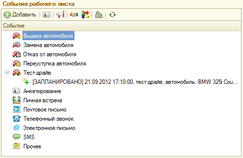
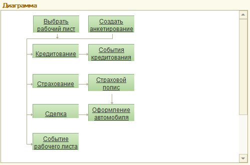

Обработка представляет собой рабочее место менеджера по продажам автомобилей. Позволяет просматривать состояние сделок с клиентами, быстро оформить сделку, перейти к другим АРМ для выполнения различных операций по сделке.
Интерфейс "Автосалон". Является основной формой АРМ. Форма состоит из следующих элементов:
Строка поиска. Поиск осуществляется по документам "Рабочий лист". Критериями для поиска служат наименование (ФИО) клиента и номер телефона клиента (основной телефон), а также следующие реквизиты рабочего листа: номер документа, наименование клиента и телефон клиента, модель автомобиля и пользователи(участники). Полученные в результате поиска документы отображаются в списке рабочих листов.
Кнопка "Настройка полей поиска". Служит для указания перечня полей, по которым производится поиск документов. В форме настройки полей поиска обязательно должно быть выбрано хотя бы одно поле.
Флаг "Только мои клиенты". Позволяет отображать только рабочие листы, автором которых является текущий пользователь.
Рабочие листы. Список документов "Рабочий лист". Кнопка "Незапланированные" позволяет отключить видимость документов, которые "запланированы". Запланированным считается рабочий лист, на основании которого введен документ "Событие" с состоянием "запланировано" и датой события больше текущей даты. Кнопка "Без отказов" позволяет отключить видимость рабочих листов со статусом "Отказ".
События рабочего листа. В зависимости от состояния переключателя отображается дерево событий, которое строится по рабочему листу в текущей строке списка, либо дерево по событиям клиента из рабочего листа, либо диаграмма. Двойным щелчком по виду события можно открыть форму ввода нового события данного вида. Двойной щелчок по событию открываем форму данного события.


Поле "Информация о клиенте". Содержит сведения о клиенте рабочего листа в текущей строке списка.
Поле "Контактная информация". Показывает контактную информацию клиента рабочего листа в текущей строке списка, а также других контрагентов, контактным лицом которых он является.
Поле "Информация по рабочему листу". Показывает сведения по рабочему листу в текущей строке списка.
Панель основных действий. Содержит кнопки основных действий и контекстных переходов между АРМ.
«Календарь». Если по рабочему листу в текущей строке списка имеются введенные на основании события, то при контекстном переходе задается вопрос об установке отбора по данному рабочему листу. Переход к календарю с установленным отбором позволит увидеть только эти события на календаре. Календарь будет открыт с позиционированием на последнем событии. Переход к календарю без отбора позволит увидеть все события в базе и выбрать подходящее время для того, чтобы запланировать новое событие по рабочему листу.
Основные действия:
Печать - печать списка рабочих листов.
Звонок клиенту - переход к обработке "СофтФон".
SMS клиенту - переход к созданию нового SMS сообщения
E-mail клиенту - переход к созданию нового электронного письма
"Настройка полей поиска". Служит для указания перечня полей, по которым производится поиск документов. В форме настройки полей поиска обязательно должно быть выбрано хотя бы одно поле.